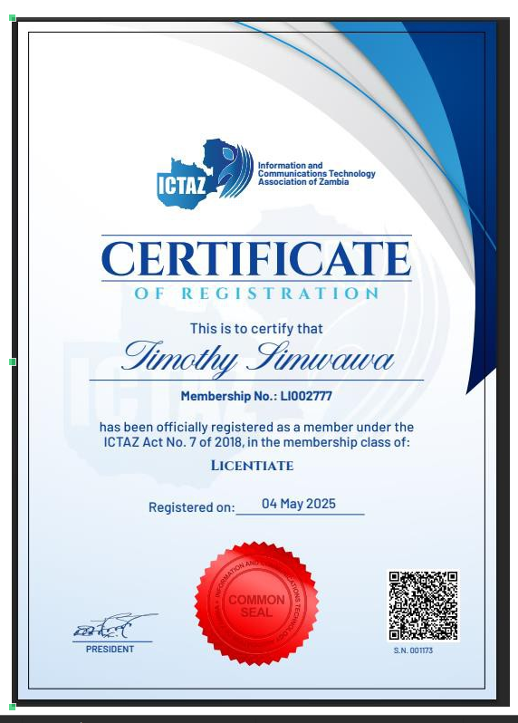
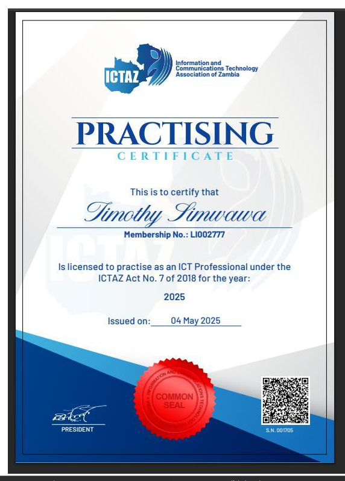

Timothy Simwawa
- +260964343103 / +260972440567
- simwawatimothy64@gmail.com
- Lusaka, Zambia
I am Timothy Simwawa, a 24-year-old software engineer from Zambia with a strong background in backend development, DevOps, and applied machine learning. I have contributed to critical national-scale financial systems, including the deployment and DFSP integration of Mojaloop in Zambia, developed secure enterprise-grade banking systems, and built intelligent tools like a toxic comment classifier and facial recognition attendance platform.
My experience spans technologies such as Python, TypeScript, Spring Boot, PHP, and Django, along with infrastructure tools like Docker, Kubernetes, and CI/CD pipelines. I am passionate about using technology to drive impactful change and build inclusive digital solutions that scale.
I thrive in dynamic, collaborative environments and bring a hands-on, problem-solving mindset to every project I take on. My mission is to help shape secure, accessible, and future-proof tech ecosystems across Africa and beyond.
Work Experiences
Senior DevOps Engineer / Systems Integrator
Led the deployment and operations of the Mojaloop real-time payment switch in Zambia, enabling interoperability across digital financial service providers. Focused on delivering scalable, secure, and highly available infrastructure using modern DevOps practices. Collaborated with stakeholders including financial institutions, regulatory bodies, and engineering teams to ensure seamless rollout and compliance.
- Provisioned and maintained cloud infrastructure (AWS/Azure) for Mojaloop core components using Terraform and Ansible.
- Implemented CI/CD pipelines with Jenkins and GitHub Actions to streamline deployments and reduce release cycles.
- Set up observability stack (Prometheus, Grafana, ELK) to monitor system health and performance metrics.
- Ensured system security through automated patching, vulnerability scanning, and role-based access control (RBAC).
- Worked closely with the Mojaloop Foundation and local partners to support training, go-live readiness, and post-deployment support.
Python / TypeScript Developer
Developed backend and frontend components for scalable financial technology applications, contributing to cross-functional projects that enhanced digital payments infrastructure in Africa. Focused on delivering high-quality, testable code with strong emphasis on API design, data integration, and system reliability.
- Built and maintained RESTful APIs using Python (FastAPI, Django) for core fintech services.
- Developed responsive and modular frontend components with TypeScript and React.
- Integrated third-party services and APIs, including payment gateways and identity verification platforms.
- Wrote automated tests with PyTest and Jest, achieving 85%+ test coverage across major modules.
- Collaborated with DevOps team to containerize applications using Docker and deploy via CI/CD pipelines.
Software Developer
Contributed to the development of enterprise-grade web applications using Spring Boot and PHP, supporting digital transformation initiatives for SMEs. Worked across the full development lifecycle, from requirements analysis and system design to implementation and maintenance.
- Developed and deployed RESTful services using Spring Boot for internal business tools and client-facing platforms.
- Maintained and extended legacy systems built in PHP (Laravel and plain PHP), ensuring compatibility and performance improvements.
- Collaborated with frontend developers to integrate backend APIs with modern JavaScript frameworks.
- Wrote unit and integration tests to ensure code quality and reduce regression risks.
- Participated in Agile ceremonies, including sprint planning, code reviews, and retrospectives.
Projects
Moja loop
Contributing to the open-source Mojaloop project, a real-time, interoperable payment platform for financial inclusion. Playing a key role in deploying Mojaloop core components and integrating multiple DFSPs in Zambia's national payment switch ecosystem.
- Provisioned Mojaloop core infrastructure using containerized services (Kubernetes, Docker).
- Integrated and configured DFSPs to participate in live Mojaloop transaction flows using Open API standards.
- Contributed to deployment automation scripts and supported configuration management for production environments.
- Collaborated with community contributors and stakeholders to troubleshoot and resolve integration issues.
Banking App / System
Contributed to the development of a secure digital banking platform for a major commercial bank (under NDA). Worked on backend services, system integration, and infrastructure setup to support scalable financial operations across mobile and web channels.
- Built microservices for transaction processing, user authentication, and notifications using Spring Boot and Python.
- Integrated third-party APIs for KYC, credit scoring, and payment processing.
- Worked on database design and optimization for high-volume transactional systems (PostgreSQL, Redis).
- Supported deployment pipelines and environment configuration using GitLab CI/CD and Docker.
- Collaborated with security and compliance teams to align development with industry standards (PCI-DSS, ISO 27001).
Developed a Python SDK for seamless integration with the Zambia Revenue Authority (ZRA) Smart Invoice / VSDC API. The SDK simplifies communication with ZRA’s fiscalization services, allowing developers to register, validate, and submit electronic invoices directly from their systems or applications.
- Implemented core API methods for invoice submission, status retrieval, and taxpayer verification.
- Added automatic token handling, retries, and error management for reliable integration with ZRA endpoints.
- Designed the SDK for easy use in Django, Flask, or standalone Python projects.
- Included sandbox and production environment support with secure authentication handling.
- Provided full developer documentation and example scripts for common use cases.
- Packaged and published the SDK on GitHub and PyPI for open access and contribution.
Created a Python SDK for integrating with the National Pension Scheme Authority (NAPSA) e-Services platform, enabling secure submission and retrieval of contribution and employer data. The SDK simplifies automation of NAPSA’s digital services, supporting developers and payroll systems in streamlining pension reporting workflows.
- Implemented API wrappers for key NAPSA endpoints, including employer registration, employee contribution uploads, and compliance status checks.
- Added secure OAuth2-based authentication and automatic token refresh for protected endpoints.
- Designed modular architecture for easy integration with ERP, HR, or accounting software.
- Included built-in validation and error handling to ensure data integrity before submission.
- Provided sandbox and production configuration options with detailed usage documentation.
- Released the SDK as open source on GitHub and PyPI to encourage developer collaboration.
Developed a comprehensive Constituency Development Fund (CDF) Project Tracking System using Django REST Framework for the backend and Next.js for the frontend. The system enables government officials and citizens to monitor CDF-funded projects in real time — from proposal to completion — ensuring transparency, accountability, and data-driven decision-making.
- Designed a secure REST API in Django for managing constituencies, projects, budgets, and progress updates.
- Integrated user authentication, role-based access (Admin, Constituency Officer, and Citizen), and audit logging.
- Built an interactive, responsive frontend in Next.js with Tailwind CSS and dynamic dashboards for visual analytics.
- Implemented progress tracking with file uploads, document verification, and status updates for each project.
- Added real-time data synchronization and API caching for optimized performance.
- Deployed the full-stack application using Docker, Nginx, and GitHub Actions for continuous integration.
Built a digital platform for automating the teacher transfer process within educational districts using Node.js for backend APIs and Next.js for the frontend interface. The system enables teachers, administrators, and district officers to manage transfer requests, approvals, and allocations efficiently and transparently.
- Developed RESTful APIs with Express.js for managing user accounts, transfer requests, and approval workflows.
- Implemented authentication and authorization using JWT and role-based access control for teachers and admin users.
- Created an intuitive, mobile-responsive frontend with Next.js and Tailwind CSS for real-time status tracking.
- Integrated file upload functionality for supporting documents and transfer letters.
- Built admin dashboards for monitoring pending, approved, and rejected requests with filtering and search features.
- Deployed the full-stack solution with Docker and CI/CD pipelines via GitHub Actions for automated deployment.
Developed a machine learning–based Smishing (SMS phishing) detection platform built with Django and Python. The system includes both a REST API and a responsive web application for real-time text message analysis. The solution integrates a public-facing Bemba API to allow third-party developers to embed smishing detection into their own apps and services.
- Implemented a Naïve Bayes text classification model trained on phishing and legitimate SMS datasets to detect malicious patterns with high accuracy.
- Built RESTful API endpoints in Django REST Framework for secure programmatic access and developer integration via the Bemba API.
- Designed an interactive web dashboard for message scanning, visualization, and API key management.
- Incorporated user authentication, API rate limiting, and logging for security and monitoring.
- Deployed the solution using Docker and Nginx, with continuous integration via GitHub Actions.
- Provided API documentation and SDKs for Python and JavaScript to streamline developer adoption.
In-house Loan Management System
Led the development of a custom loan management system for one of Zambia’s largest commercial banks. The system streamlined internal loan requests, approvals, and disbursements, integrated with enterprise platforms, and adhered to strict regulatory standards.
- Designed and developed core modules for loan applications, credit risk evaluation, approval workflows, and reporting.
- Integrated with Workday for employee data synchronization and eligibility validation.
- Implemented authentication and access control using Microsoft Active Directory (AD).
- Connected with E-Box for secure digital document storage, submission, and retrieval.
- Ensured compliance with internal audit requirements and delivered extensive audit trail features.
Toxic Comment Detection System
Built a machine learning model to classify and detect toxic or abusive comments in online content. View on GitHub. Designed to help moderate user-generated content and improve digital platform safety through automated screening and flagging.
- Used natural language processing (NLP) techniques with libraries such as NLTK and spaCy for text preprocessing.
- Trained and evaluated models including Logistic Regression, Random Forest, and LSTM using scikit-learn and TensorFlow.
- Utilized datasets from Kaggle's Jigsaw Toxic Comment Classification Challenge for model training and validation.
- Achieved high accuracy and F1 score, with ability to classify multiple labels such as toxic, obscene, threat, and insult.
- Built a simple Flask web interface for real-time comment classification and API integration with other systems.
Face Recognition Attendance System
Developed a facial recognition-based attendance system using Python and Django. View on GitHub. The system automates user identification through webcam input and stores attendance records securely in a web interface.
- Used OpenCV and face-recognition libraries for real-time face detection and recognition.
- Built a Django-based backend to manage users, attendance logs, and access control.
- Implemented a responsive frontend using Django templates and Bootstrap for usability.
- Stored user face encodings and attendance records in a PostgreSQL database.
- Designed admin panel for adding new users, viewing reports, and system monitoring.
Certificates
Diploma in Cyber Security
I obtained a Diploma in Cyber Security from Alison, a reputable online learning platform offering comprehensive courses in cyber security.
This certification provided me with extensive knowledge of security principles, risk management, network security, cryptography, and incident response strategies. It has equipped me with the skills necessary to identify vulnerabilities, secure IT infrastructures, and develop robust security policies to protect organizations from cyber threats.
The hands-on training and theoretical foundation gained have enabled me to stay current with evolving cyber security challenges and best practices in the industry.
ICTAZ Membership

I am a proud member of the Information and Communication Technology Association of Zambia (ICTAZ), a professional body that promotes excellence and innovation within the ICT sector in Zambia.
Through this membership, I actively participate in initiatives aimed at advancing ICT standards, advocating for digital transformation, and fostering a collaborative professional community.
- Engaged in continuous professional development through workshops, seminars, and conferences organized by ICTAZ.
- Contributed to advocacy campaigns promoting ICT literacy and digital inclusion across Zambia.
- Networked with other ICT professionals to share knowledge and best practices.
Being part of ICTAZ demonstrates my commitment to ethical conduct and ongoing growth in the dynamic field of information and communication technology.
Professional License

I hold a Professional License as an ICT practitioner, officially authorized by the relevant regulatory authority in Zambia.
This license affirms my qualifications to provide consultancy, technical services, and implementation of ICT solutions while adhering to established professional and ethical standards.
- Authorized to deliver expert ICT consultancy services across various sectors.
- Committed to maintaining high standards of integrity, confidentiality, and professionalism.
- Engage in regular professional development and comply with mandatory license renewal requirements.
This license validates my role as a trusted ICT specialist capable of driving technology initiatives and ensuring compliance with industry regulations.